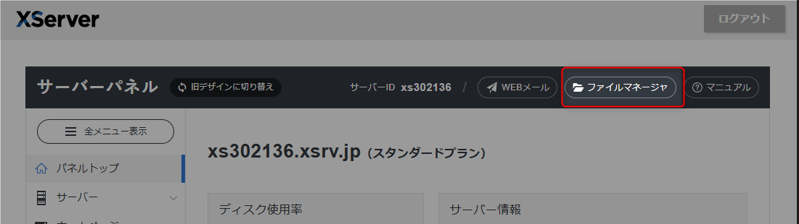
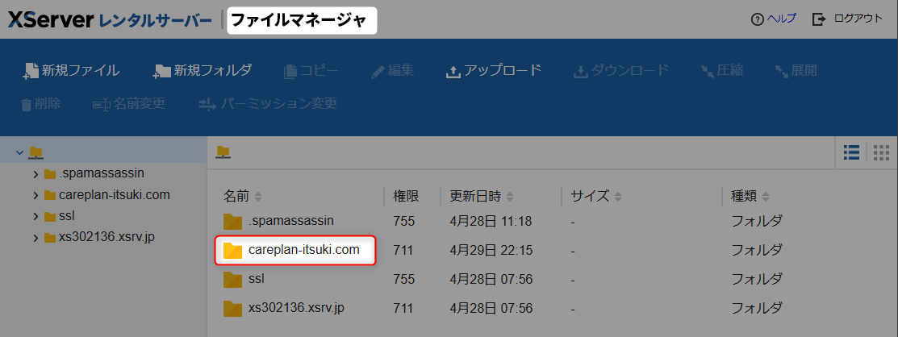
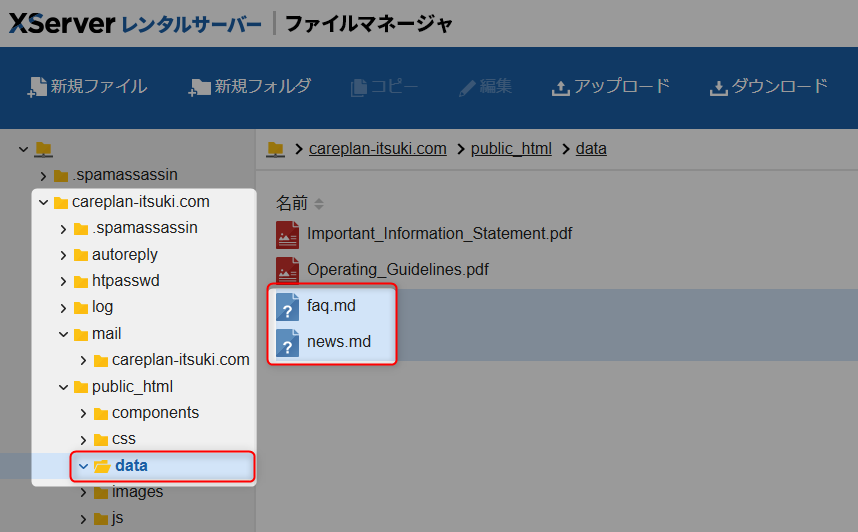

Markdownファイルの修正方法
修正の基本フロー
- XServerへのアクセス
- ログイン
- ファイルマネージャーの操作
- 作業を始める前に以下の準備をしてください
- ファイルの修正
- アップロードと確認
- 修正ファイルのアップロード
- 表示確認
XServerへのアクセス方法
XServerのファイルマネージャーへのアクセス手順
- 以下のURL（サーバーパネル ログイン）にアクセスします
https://secure.xserver.ne.jp/xapanel/login/xserver/server/ - ログイン情報を入力
- 認証コードが
cp-itsuki@outlook.jp宛に送信されます - メールで受け取った認証コードを入力してログインします
※ 一度認証が完了した端末やIPアドレスから、短期間に再度ログインした場合は「信頼できる端末」とみなされ、認証コードの入力が省略されることがあります。 - ログイン後、「ファイルマネージャー」をクリックします
 - ファイルマネージャ画面で
careplan-utsuki.comというフォルダを見つけて開きます
 - 以下のパスに移動してください：
/public_html/data
このディレクトリ内でfaq.mdとnews.mdのダウンロード・アップロードを行います。

作業を始める前に以下の準備をしてください
- XServerにログインし、ファイルマネージャーを開きます（アクセス方法を参照）
- 修正したいファイル（faq.mdまたはnews.md）をファイルマネージャーからダウンロードします
- 念のため、修正前のファイルをバックアップとしてローカルに保存しておきます
- テキストエディタ（メモ帳、VSCode等）で開きます
ファイルの修正
FAQの修正方法（faq.md）
FAQファイルは質問と回答のペアで構成されています。以下の手順で修正してください：
新しい質問を追加する場合
- ファイルの中程にある他の質問と回答の形式を参考にします
- 最後の質問の後ろに、2行の空白を入れます
- 以下の形式で新しい質問を追加します
---
questions:
- question: ここに質問を書きます
answer: ここに回答を書きます。
複数行の場合は、このように記載できます。
- question: 次の質問
answer: 次の回答
---
具体例
---
questions:
- question: 利用料金について
answer: 相談やケアプラン作成に関わる費用、ケアマネジャーの費用については、すべて公費で賄われますので、当事業所から料金を請求することはありません。 ご利用者様の負担はありませんので、安心してサービスをご利用いただけます。
---
修正のポイント
- 質問と回答は必ず
question:とanswer:で始めてください - 質問と回答の前には必ず
-（ハイフンとスペース）を入れてください - 回答の中でリンクを入れる場合は
[表示テキスト](リンク先.html)の形式で記載してください - ファイルの始めと終わりに必ず
---を入れてください - インデント（行頭の空白）は必ず半角スペース2つを使用してください
- 質問と回答の間は1行空けないでください
- 異なる質問の間は1行空けてください
改行について
- 改行したい場所に
＜br＞タグを入れることで改行できます - 複数行の回答を書く場合は、
＜br＞タグを使用して改行してください
例（brタグで改行）：
1行目
2行目
3行目
2行目
3行目
※ 半角スペース2つでの改行は本システムでは機能しないため、必ず ＜br＞ タグをご使用ください。
ニュースの修正方法（news.md）
ニュースは時系列順に並んでいます。新しいニュースは既存のニュースの上に追加してください。
新しいニュースを追加する場合
- ファイルの上部にある既存のニュースの形式を確認します
- 最新のニュースの上に、2行の空白を入れます
- 以下の形式で新しいニュースを追加します
## ここにニュースの内容を書きます
- 日付: YYYY-MM-DD
- カテゴリー: カテゴリー名
- リンク: ../
具体例
## この度、**ケアぷらん樹**のホームページを開設いたしました。地域の皆様に、より多くの情報をお届けできるよう努めてまいります。
- 日付: 2025-04-30
- カテゴリー: ご挨拶
- リンク: ../
修正のポイント
- ニュースの内容は必ず
##（シャープ2つ）で始めてください - 日付は必ず
YYYY-MM-DDの形式で記載してください（例：2025-04-30） - 太字にしたい場合は、文字を
**で囲んでください（例：太字） - 各項目の前には必ず
-（ハイフンとスペース）を入れてください - カテゴリーは既存のものから選んでください（ご挨拶、お知らせ、重要など）
- リンクは通常
../のままにしてください
リンクについて
- 通常のニュースの場合：
- リンク: ../のままにしてください（トップページへのリンクとなります） - 特定のページへリンクしたい場合：
リンク先のページは事前に作成してサーバーにアップロードする必要があります。
例：イベント告知ページ、サービス紹介ページなど
※ リンク先のページが必要な場合は、お問い合わせ先までご連絡ください。
アップロードと確認
ファイルの修正が完了したら
- 修正内容を保存します
- XServerのファイルマネージャーを開きます（アクセス方法を参照）
- 「アップロード」ボタンから修正したファイルをアップロードします
- ウェブサイトで正しく表示されているか確認します
- 問題がなければ作業完了です
ファイル操作時の注意事項
- ファイルをアップロードする前に、必ずバックアップを取っておいてください
- アップロード後は必ずウェブサイトで表示を確認してください
- 問題が発生した場合は、すぐにバックアップファイルを使って復旧できるようにしておいてください
注意事項
- ファイルを保存する前に、必ず内容を確認してください
- 形式が正しくないと、ウェブサイトで正しく表示されない可能性があります
- 変更後、ウェブサイトで正しく表示されているか確認してください
- 不安な点がある場合は、修正前に必ずご相談ください
お問い合わせ先
不明な点がございましたら、以下までご連絡ください
- 代表者：株式会社ハロスマイル 佐川昭一
- 代表電話：092-985-8138
- メール：info@harosmile.com
※ 些細な質問でもお気軽にご相談ください。